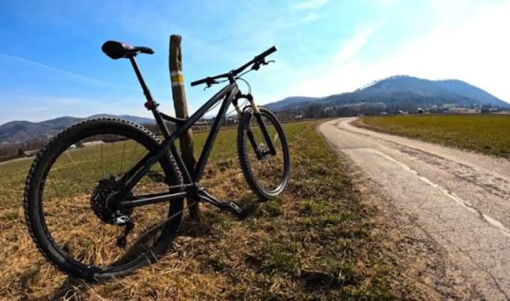

ARTYKUŁ • 4 października 2026
Rowerem po Polsce — jak zaplanować pierwszą wielodniową wyprawę
Green Velo, Velo Dunajec, Velo Baltica — Polska ma coraz więcej tras rowerowych. Sprawdź, jak zaplanować pierwszą wielodniową wyprawę rowerową.

Polska ma ponad 20 000 km oznakowanych tras rowerowych — w tym kilka wielodniowych szlaków europejskiej klasy. Jeśli nigdy nie jeździłeś na wielodniową wyprawę, oto jak zacząć.
1. Wybierz trasę odpowiednią do swojego poziomu
Na pierwszą wyprawę nie wybieraj Green Velo (2000 km). Zacznij od krótszej trasy — Velo Dunajec (240 km), Velo Baltica (300 km), Wielka Pętla Wielkopolski (600 km). Trzy-cztery dni na rowerze to dobry początek.
2. Nie planuj zbyt dużych dystansów
Z bagażem przejechanie 60-80 km dziennie to realistyczny cel. Nie planuj 100 km dziennie — to wycieńczy cię po dwóch dniach. Lepiej przejechać mniej, ale z przyjemnością.
3. Zarezerwuj noclegi z wyprzedzeniem
W sezonie (czerwiec-sierpień) wiele miejsc jest zajętych. Zarezerwuj noclegi wcześniej, zwłaszcza w popularnych regionach. Warto wybrać miejsca przyjazne rowerzystom — z bezpiecznym parkingiem na rowery.
4. Zadbaj o rower
Przed wyjazdem sprawdź hamulce, opony, przerzutki. Zabierz ze sobą zestaw naprawczy (dętki, pompkę, multitool), apteczkę i oświetlenie. Warto też zapisać adresy warsztatów rowerowych na trasie.
5. Spakuj się lekko
Zasada: mniej znaczy więcej. Zabierz tylko to, co niezbędne: dwie koszulki, spodnie, kurtkę przeciwdeszczową, krem z filtrem, jedzenie na drogę. Wszystko w sakwach rowerowych — plecak jest niewygodny na dłuższych trasach.
6. Jedz lokalnie i pij dużo
Zatrzymuj się w lokalnych barach, piekarniach, gospodach. Jedz to, co lokalne — to część podróży. Pij dużo wody — na rowerze tracisz więcej niż myślisz.
7. Zaplanuj dzień buforu
Zawsze zaplanuj jeden dzień buforu. Może się okazać, że trasa jest trudniejsza niż myślałeś, że pogoda się zepsuje, że rower się zepsuje. Bufor uratuje ci urlop.
8. Ciesz się jazdą
To najważniejsza zasada. Rower to nie wyścig — to sposób na podróżowanie. Zatrzymuj się przy widokach, rozmawiaj z ludźmi, jedz lokalne przysmaki. Slow travel na rowerze to najlepszy sposób, żeby naprawdę poznać Polskę.